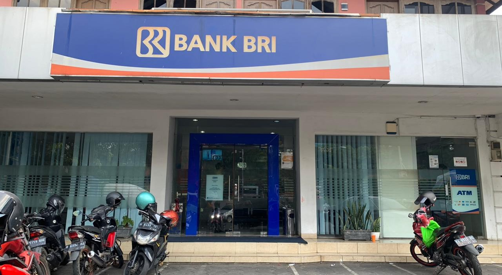
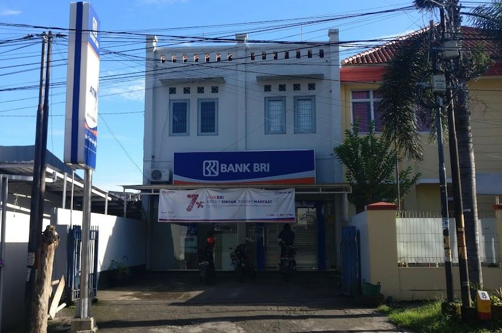

Welcome To Our Site
ATM
Automatic Teller Machine
Pengertian
ATM adalah singkatan dari Anjungan Tunai Mandiri. Merupakan perangkat elektronik dimana nasabah dapat melakukan transaksi keuangan seperti tarik tunai, setor, dan cek saldo, tanpa memerlukan teller bank.
Fungsi
Menarik uang tunai 24 jam, menyetor ke rekening tabungan, melakukan pengiriman uang dan membayar tagihan rutin
Tujuan
Menarik uang, setor tunai, dan transfer, ATM juga sudah bisa digunakan untuk melakukan pembayaran terhadap berbagai jenis tagihan. Beberapa tagihan yang bisa dibayar melalui ATM, seperti air, listrik, internet, pendidikan dan sebagainya.
Keunggulan
Akses ke uang tunai di mana saja dan kapan saja, mesin ATM menawarkan inklusi keuangan,mesin ATM menawarkan berbagai layanan, mesin ATM lebih murah perawatannya, mesin ATM memiliki fungsi penting di saat krisis.
Portofolio
Berikut merupakan gambar Persebaran ATM di Kecamatan Tembalang.
-

ATM BRI
Jl. Prof. Sudarto No.9, Tembalang, Kec. Tembalang, Kota Semarang, Jawa Tengah
-

ATM BANK JATENG
Jl. Galang Sewu Raya, Tembalang, Kec. Tembalang, Kota Semarang, Jawa Tengah<
-
ATM BNI
ICT Center Undip, Tembalang, Kec. Tembalang, Kota Semarang, Jawa Tengah
-

ATM BRI
Jl. Banjarsari, No.25, Tembalang, Kec. Tembalang, Kota Semarang, Jawa Tengah
-

ATM BANK JATENG
Jl. Ngesrep Timur.V,Sumurboto,Kec. Banyumanik,Kota Semarang,Jawa Tengah
-
ATM BNI
Jl. Sirojudin, Tembalang, Kec. Tembalang, Kota Semarang, Jawa Tengah
{kind=link}
{kind=link}
{kind=link}
{kind=link}
{kind=link}
{kind=link}